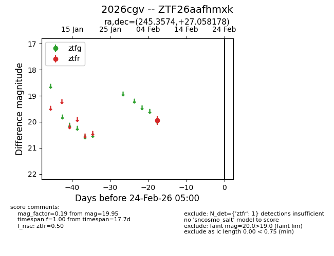
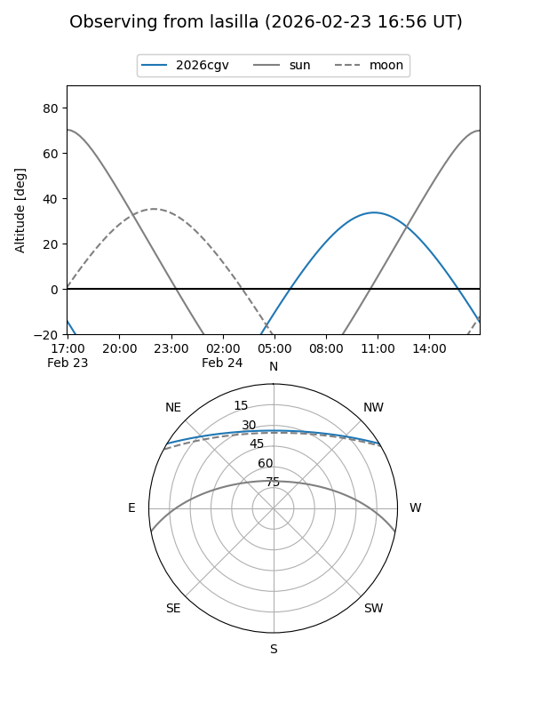
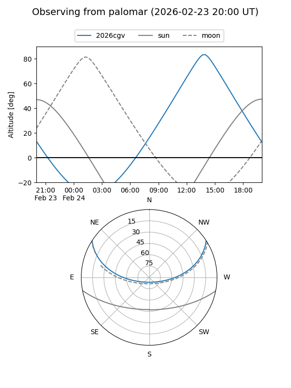

2026cgv
Target 2026cgv at 2026-02-24 09:08
Aliases and brokers:
FINK: link
Lasair: link
ALeRCE: link
TNS: link
YSE: link
alt names
ZTF26aafhmxk (ztf,fink_ztf)
2026cgv (tns,yse)
Coordinates:
equatorial (ra, dec) = 245.3574,+27.05818
equatorial (HMS+DMS) = 16:21:25.77,+27:03:29.44
galactic (l, b) = (45.5100,+43.62507)
Flags:
Photometry:
last ztfr=19.95
1 ztfr detections
Lightcurve

Visibility


Additional plots